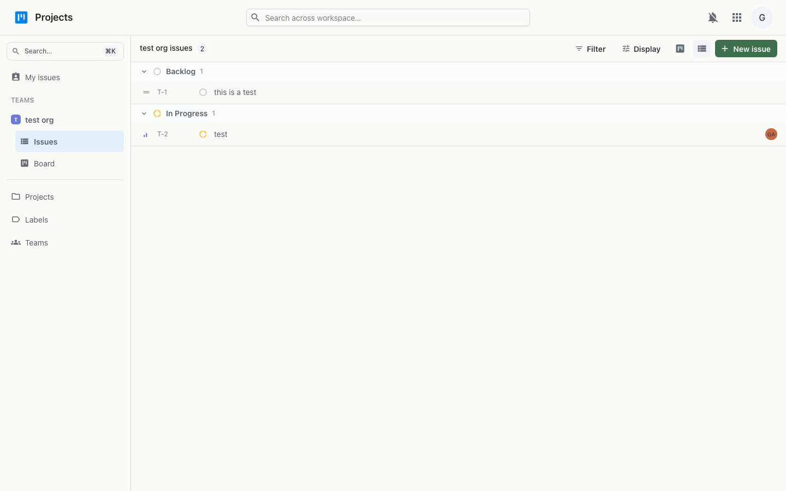

Kanban boards for tracking work — issues with status, priority, assignees and sub-issues, synced live across your team.
Projects is a fast, Linear-style issue tracker. Teams own issues with a short key (like ENG-1), and you can work them on a kanban board, drag them between columns, or read them as grouped lists. Every issue carries a status, priority, assignee, labels and an estimate, and can be broken into sub-issues — with updates syncing live across everyone on the team.

Work is organised by team; each team has a key that prefixes its issue identifiers, and issues carry status, priority, assignee, labels, estimate and an optional parent for sub-issues. Issues can also be grouped into projects. Moving a card on the board updates the issue's status, and every change broadcasts to the team over a live websocket. Access uses the workspace single sign-on.